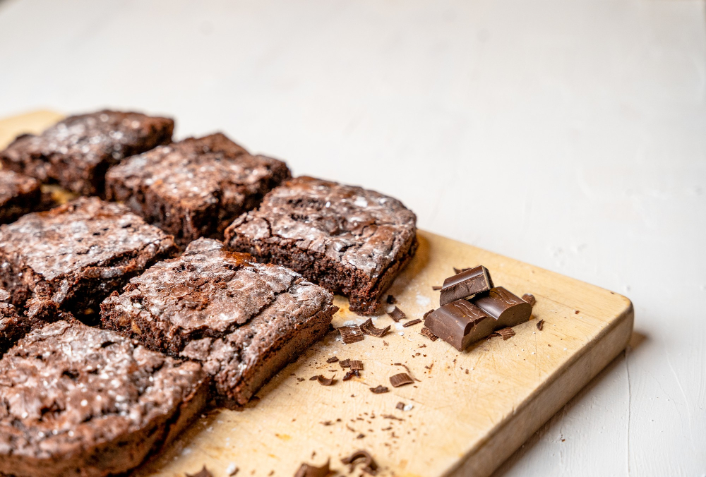

Brookies (Brownie Cookies)
Home

Image by wirestock on Freepik
Description
Nobody can say no to a sweet treat! but when you need to decide
between a soft and gooey brownie or a crumbly cookie, the
the choices may seem dire. So was the conundrum experienced by
the recipe's original author's coworker for her birthday treat.
The author decided to surprise her with an original recipe
combining the two instead! How sweet (pun intended)! A brookie is
a part brownie, and part cookie, and is the perfect mashup if you can't decide between the two.
This recipe makes 20 brookies.
The original recipe is by Melanie B on AllRecipes.
Ingredients
Cookie Layer
- 1/2 cup softened butter
- 1/2 cup light brown sugar
- 1/4 white sugar
- 1/2 tsp vanilla extract
- 1 large egg
- 1 1/4 cups all-purpose flour
- 1/2 tsp salt
- 1/2 tsp baking soda
- 1 cup semisweet chocolate chips
Brownie Layer
- 1 cup white sugar
- 1/2 cup melted butter
- 1 tsp vanilla extract
- 2 eggs
- 1/3 cup cocoa powder
- 1/2 cup all-purpose flour
- 1/4 teaspoon baking powder
- 1/8 teaspoon salt
Steps
-
Preheat the oven to 350°F or 175°C. Grease a 9x13 baking dish.
-
Prepare the cookie layer:
-
Beat the butter, brown and white sugar, and the 1/2 tsp vanila
until creamy. Add one egg, then beat till light/creamy
for 2 minutes.
-
Whisk the flour, salt, and baking soda in a bowl. Then
start to add the flour mixture into the initial butter
mixture gradually. Stir the cocolate chips in.
-
Spread the dough evenly into the baking dish.
-
Prepare the brownie layer:
-
Stir the sugar, melted butter, and 1 tsp vanila in a bowl.
Then add two eggs and beat well. Mix in cocoa powder till
the mixture is well combined
-
Add in the flour, baking powder, and salt and stir till
combined.
-
Pour over the cookie layer in the baking dish, and spread
to cover it completely.
-
Bake the dish in the preheated oven for 20 to 25 minutes, or
until a toothpick inserted into the center comes out clean.
-
Cut into 20 bars, and enjoy your freshly made brookies!